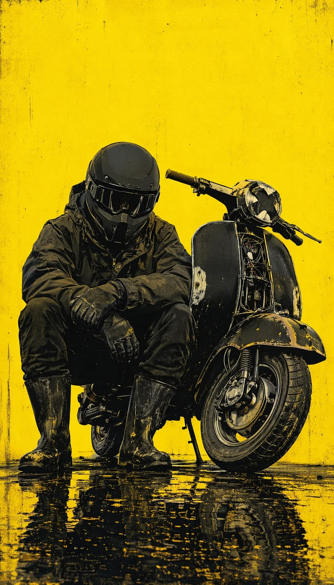
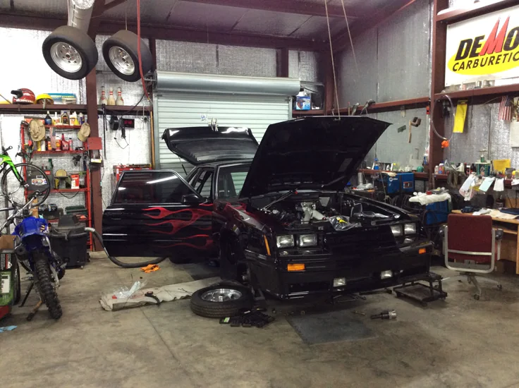
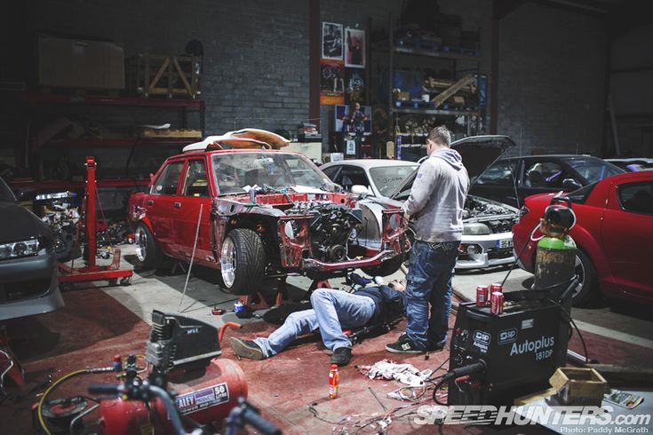
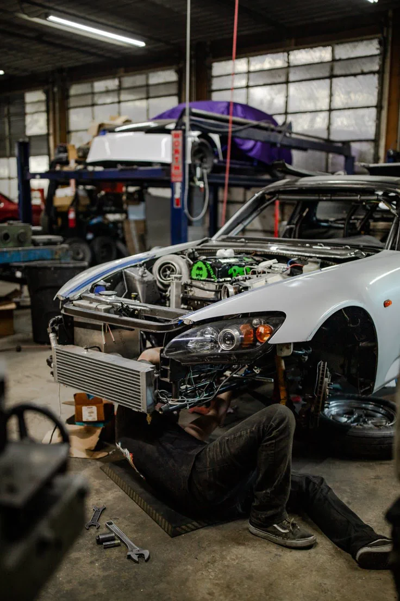
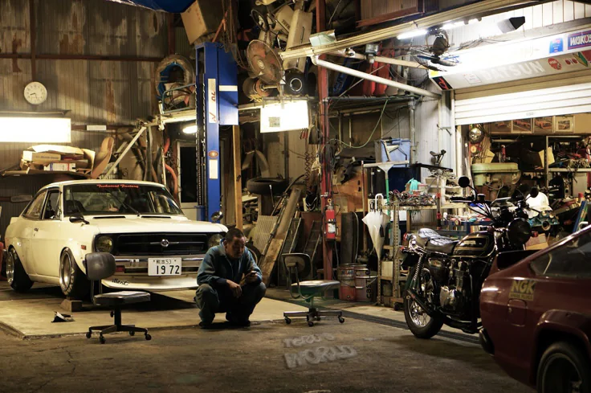
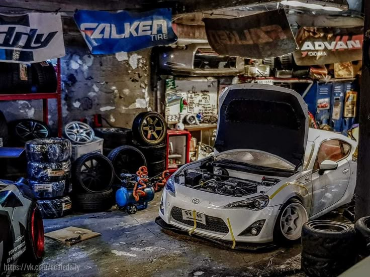
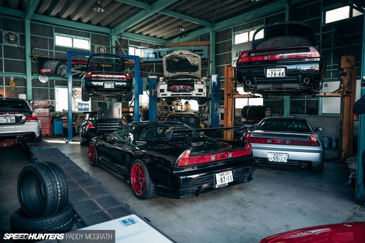
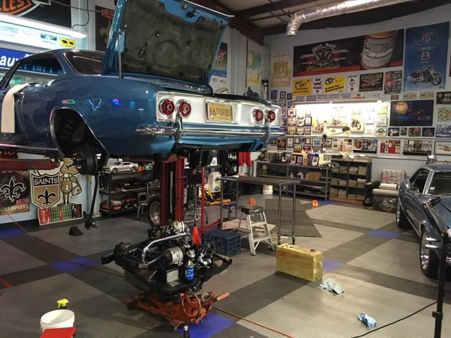
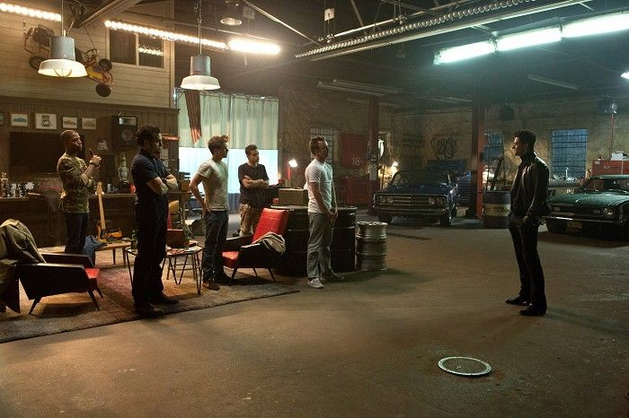
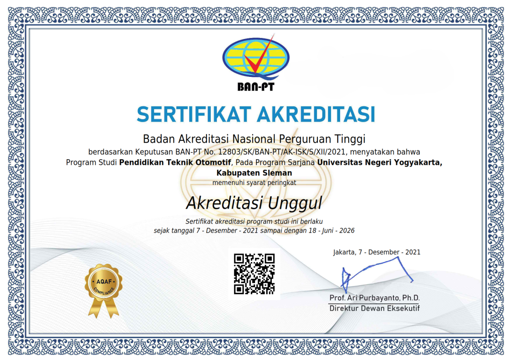

Mahasiswa Teknik Otomotif
Muhammad Iqra
Mahasiswa Teknik Otomotif Universitas Negeri Yogyakarta
Saya sedang bertumbuh menjadi
Saya memiliki ketertarikan yang kuat terhadap sistem otomotif modern, inovasi mekanik, dan disiplin yang dibutuhkan untuk mengubah pengetahuan teknis menjadi dampak nyata. Perjalanan belajar saya berfokus pada teknologi kendaraan, ketelitian rekayasa, serta pembentukan kebiasaan profesional untuk berkontribusi pada mobilitas yang lebih aman, cerdas, dan efisien.

Tentang
Membangun masa depan di dunia teknik otomotif melalui disiplin, rasa ingin tahu, dan pertumbuhan praktis.
Perjalanan akademik dan teknis saya dibentuk oleh komitmen untuk memahami cara kerja kendaraan, baik pada level sistem maupun komponen. Saya menikmati proses menghubungkan teori rekayasa dengan praktik bengkel, alat desain digital, dan pemecahan masalah kolaboratif untuk membangun fondasi yang kuat bagi karier jangka panjang di industri otomotif.
Profil Profesional
Sebagai mahasiswa Teknik Otomotif, saya terus mengembangkan kemampuan dalam diagnosis, perawatan, interpretasi desain, dan komunikasi teknis. Saya memandang setiap sesi laboratorium, proyek akademik, dan tantangan bengkel sebagai kesempatan untuk mempertajam ketelitian sekaligus pengambilan keputusan. Tujuan saya bukan hanya menambah wawasan, tetapi juga membangun insting rekayasa yang andal untuk mendukung solusi mobilitas di dunia nyata.
Saya memiliki minat khusus pada titik temu antara performa kendaraan, keselamatan, efisiensi, dan teknologi yang terus berkembang. Baik saat mengerjakan analisis perawatan, konsep berbasis CAD, maupun tugas penelitian, saya berfokus untuk menghasilkan output yang terstruktur, matang, dan terukur.
Visi
Menjadi engineer otomotif yang berkontribusi pada sistem transportasi yang cerdas, efisien, dan siap menghadapi masa depan.
Misi
Terus memperkuat keterampilan teknis, wawasan praktis, dan kemampuan kerja sama melalui pembelajaran yang disiplin dan pengalaman langsung.
Tujuan Karier
Berkembang ke peran yang berkaitan dengan diagnosis otomotif, desain mekanik, pengembangan produk, dan operasional rekayasa.
Nilai Personal
Integritas, ketelitian, konsistensi, adaptabilitas, dan rasa tanggung jawab yang kuat dalam setiap pekerjaan.
Pendidikan
Fondasi akademik yang dibangun di atas sistem kendaraan, pola pikir desain, dan dasar-dasar rekayasa.
Universitas Negeri Yogyakarta
Fakultas Teknik • Program Studi Teknik Otomotif
Automotive Engine
Automotive Electrical
Vehicle Maintenance
CAD Design
Manufacturing Process
Thermodynamics
Engineering Drawing
Mechanical Design
Keahlian & Tools
Kesiapan teknis yang didukung oleh pengalaman bengkel, penguasaan tools digital, dan soft skill kolaboratif.
Hard Skills
Engine Repair
Vehicle Diagnostics
Automotive Maintenance
CAD Design
SolidWorks
AutoCAD
Mechanical Design
Technical Drawing
Microsoft Office
Problem Solving
Quality Control
Research
Presentation
Soft Skills
Leadership
Communication
Critical Thinking
Teamwork
Adaptability
Time Management
Fast Learning
Tools
AutoCAD
SolidWorks
Microsoft Word
Excel
PowerPoint
Google Workspace
Canva
Adobe Photoshop
Arduino
Pengalaman
Pengalaman praktis yang realistis dan mencerminkan perkembangan dalam praktik bengkel, kerja tim, serta tanggung jawab teknis.
Asisten Laboratorium
Mendukung sesi praktikum dengan menyiapkan peralatan, membantu teman sekelas memahami prosedur keselamatan, dan menjaga lingkungan belajar tetap tertata.
Praktik Bengkel Otomotif
Melaksanakan inspeksi kendaraan, pekerjaan perawatan, dan troubleshooting dasar sambil memperkuat ketelitian serta disiplin alur kerja.
Tim Proyek Mekanik
Berkolaborasi dalam diskusi konsep, pelaksanaan tugas, dan penyusunan laporan untuk proyek desain mekanik dan otomotif skala kecil.
Organisasi Mahasiswa
Membantu koordinasi, komunikasi, dan tanggung jawab acara sekaligus membangun kapasitas kepemimpinan dan kerja tim.
Volunteer Acara Engineering
Berkontribusi pada operasional acara, pendampingan peserta, dan persiapan teknis dalam kegiatan kampus bertema engineering.
Asisten Riset
Membantu pengumpulan data, tinjauan literatur, dan persiapan presentasi untuk tugas akademik terkait performa dan efisiensi kendaraan.
Proyek
Pilihan konsep dan studi teknis yang menunjukkan ketertarikan pada perawatan, diagnosis, efisiensi, dan keselamatan.

Proyek Perawatan Mesin
Analisis servis rutin yang berfokus pada alur inspeksi mesin, kualitas perawatan, dan keandalan performa.
PerawatanInspeksiPelaporan
Diskusikan Proyek

Prototipe Motor Listrik
Studi konsep yang mengeksplorasi ide rangka ringan, pertimbangan efisiensi energi, dan tren mobilitas modern.
EVKonsepDesain
Diskusikan Proyek

Sistem Inspeksi Kendaraan
Konsep alur kerja terstruktur untuk menstandarkan titik inspeksi dan meningkatkan dokumentasi perawatan.
SistemProsesKeselamatan
Diskusikan Proyek

Simulasi Diagnosis Otomotif
Latihan berbasis simulasi untuk mempelajari logika identifikasi kerusakan dan pengambilan keputusan diagnosis secara praktis.
DiagnosisAnalisisTroubleshooting
Diskusikan Proyek

Sistem Manajemen Bengkel
Konsep pengelolaan untuk mengatur alur servis, visibilitas inventaris, dan penjadwalan tugas di lingkungan praktik.
Alur KerjaManajemenEfisiensi
Diskusikan Proyek

Analisis Sistem Rem
Evaluasi komponen pengereman, prinsip kerja, dan pertimbangan keselamatan dalam kondisi terkontrol.
RemKeselamatanMekanik
Diskusikan Proyek

Riset Efisiensi Bahan Bakar
Eksplorasi akademik mengenai variabel yang memengaruhi konsumsi bahan bakar dan peran perawatan terhadap hasil efisiensi.
RisetEfisiensiData
Diskusikan Proyek

Studi Keselamatan Kendaraan
Studi mengenai prinsip keselamatan kendaraan, standar inspeksi, dan hubungan antara pencegahan dengan keandalan.
KeselamatanStandarEvaluasi
Diskusikan Proyek
Sertifikat
Pencapaian pembelajaran yang mendukung perkembangan teknis, kesiapan profesional, dan keterampilan komunikasi.

Sertifikat Akreditasi Program Studi
Sertifikat akreditasi BAN-PT untuk Program Studi Pendidikan Teknik Otomotif Universitas Negeri Yogyakarta yang memperkuat kredibilitas lingkungan akademik tempat saya berkembang.
Workshop Otomotif
Pelatihan praktik yang berfokus pada dasar perawatan dan disiplin alur servis.
Desain Mekanik
Pengenalan pada dasar desain, cara berpikir komponen, dan pemecahan masalah yang terstruktur.
Pelatihan Kepemimpinan
Program pelatihan yang menitikberatkan pada koordinasi, kerja sama tim, dan tanggung jawab dalam organisasi.
Keselamatan Kerja
Pembelajaran berfokus pada keselamatan bengkel, penggunaan APD, dan praktik pencegahan risiko.
CAD Dasar
Dasar gambar digital dan representasi teknis untuk komunikasi rekayasa.
Public Speaking
Workshop presentasi dan komunikasi untuk memperkuat kejelasan penyampaian serta kepercayaan diri.
Metodologi Penelitian
Pemahaman terstruktur tentang proses penelitian, pengumpulan data, dan kerangka analisis.
Seminar Engineering
Pengembangan profesional berkelanjutan melalui seminar inovasi dan wawasan industri.
Pencapaian
Pencapaian akademik dan kampus yang mencerminkan konsistensi, keterlibatan, dan inisiatif profesional.
Dean List
Diapresiasi atas konsistensi menjaga performa akademik dan disiplin belajar.
Kompetisi Engineering
Berpartisipasi dalam tantangan teknis kolaboratif yang mendorong pola pikir analitis.
Proyek Terbaik
Menonjol melalui presentasi proyek yang terstruktur, praktis, dan meyakinkan.
Pemateri Seminar
Menyampaikan gagasan teknis dengan jelas, percaya diri, dan persiapan yang matang.
Peserta Workshop
Aktif meningkatkan kompetensi melalui sesi teknis dan pelatihan berkelanjutan.
Portofolio
Kurasi singkat tentang fokus engineering, kualitas proses, dan gaya presentasi visual.
Apa yang direpresentasikan portofolio ini
Portofolio ini merangkum arah akademik saya, ketertarikan praktis pada sistem otomotif, serta komitmen untuk membangun kebiasaan engineering yang kuat. Di dalamnya tercermin bukan hanya kemampuan teknis, tetapi juga cara saya bertumbuh: terstruktur, penuh rasa ingin tahu, kolaboratif, dan siap berkembang melalui pengalaman.
Pola pikir sistem otomotif
Pemahaman desain mekanik
Kesiapan praktik bengkel
Disiplin dokumentasi dan pelaporan
Orientasi belajar berkelanjutan
Galeri
Placeholder visual bergaya masonry untuk momen bengkel, laboratorium, kompetisi, dan presentasi.
Testimoni
Kesan profesional dari rekan, mentor, dan kolaborator dalam lingkungan akademik maupun teknis.
RA
"Iqra membawa fokus yang tenang dan eksekusi yang matang dalam tugas teknis. Ia dapat diandalkan dan punya semangat belajar tinggi."
Rizky Ananda
Rekan LaboratoriumNS
"Ia menjalani aktivitas bengkel dengan teliti dan menerima masukan dengan serius, sehingga perkembangan dirinya sangat terlihat."
Nadia Safitri
Rekan ProyekDF
"Iqra memiliki sikap belajar yang kuat dan mampu berkomunikasi dengan jelas saat membahas tugas-tugas engineering."
Dimas Firmansyah
Pengurus OrganisasiAP
"Ia menunjukkan konsistensi dalam persiapan teknis maupun kolaborasi, terutama saat sesi praktikum berlangsung."
Aulia Pratama
Rekan BengkelLS
"Iqra memadukan kerendahan hati dengan rasa ingin tahu, sehingga sangat nyaman diajak bekerja sama dalam riset dan presentasi."
Laras Sinta
Kolaborator Akademik
Kontak